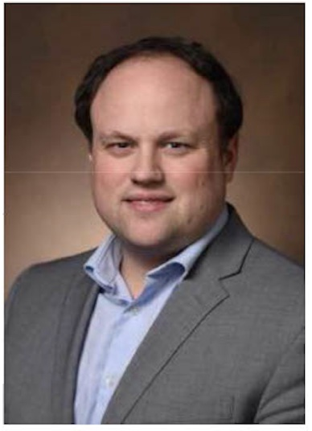

Dr Matthew Schrag, PhD
MD, PhD, Vanderbuilt School of Medicine, Nashville, Tennessse
Dr Matthew Schrag is a neurologist at Vanderbilt University Medical Center and runs the SchragLab at Vanderbilt, a neurobiology lab studying how the blood vessel network in the brain deteriorates in Alzheimer’s disease in a condition called cerebral amyloid angiopathy. His group studies post-mortem human brain tissue with advanced microscopy techniques to create detailed measurements of the vascular network associated cerebrovascular degeneration along with cell and molecular biology techniques to define mechanisms of Alzheimer’s disease that could lead to new approaches to treatment. The SchragLab’s work on the neuropathology of ARIA, a potentially dangerous side effect of anti-amyloid immunotherapies, contributed to the FDA’s decision to add a black box warning to the new drug Leqembi. Schrag also works as an indepedent research integrity consultant and has brought to light a number of important instances of apparent research misconduct which likely had a significant impact on the field of Alzheimer’s research.

Dr William Ngiam
Lecturer, School of Psychology, University of Adelaide, Australia
Dr William Ngiam is a Lecturer in the School of Psychology at the University of Adelaide in Australia. His research focuses on visual attention and working memory – how we select and represent information in mind for ongoing perception and cognition – using psychophysical methods, computational modeling, neuroimaging and machine learning. William was recognized as a champion of research rigor by the NINDS Office of Research Quality for his advocacy of early-career researchers in the Open Science movement. He serves on the steering committee of the global ReproducibiliTea network, has contributed to the Framework for Open and Reproducible Research Training (FORRT), and is soon-to-be Open Practices Editor at Attention, Perception, & Psychophysics.
Melissa Rethlefsen
Prof Melissa Rethefsen earned her Masters Degree in Library Science from University of North Texas and a Bachelor of Science from University of Minnesota. She is currently the Executive Director at the Health Sciences Library & Informatics Center at University of New Mexico. She has held several years of library leadership experience. She was previously the Fackler Director and Associate Dean for the Health Science Center Libraries at University of Florida. Melissa is passionate about reproducibility especially pertaining to systematic search strategies and has developed an extension to the PRISMA Statement devoted to search strategy reporting. As part of her interest in reproducibility, Ms. Rethlefsen led efforts to create a culture of reproducibility at the University of Utah and at the University of Florida.
Lu He
Dr. Lu He earned her PhD in Informatics from the University of California, Irvine (UCI) in 2023 and a Bachelor of Science with Distinction in Computer Science from the University of Minnesota, Twin Cities in 2017. Her research interests lie at the intersection of health informatics, data science, and Human-Computer Interaction (HCI). She is passionate about developing and applying computational methods including Natural Language Processing (NLP) on various health-related data, including social media data, Electronic Health Records (EHR), and clinical notes. Her work has been published in top health informatics and HCI journals and conferences, including the Journal of American Medical Informatics Association (JAMIA), the Journal of Biomedical Informatics (JBI), the ACM Conference on Human Factors in Computing Systems (CHI), and Computer-Supported Cooperative Work (CSCW). Her research has also been recognized with 4 best student paper nominations, in addition to the Editor’s Choice and Featured Article recognition of a paper published at JAMIA in 2021. Her dissertation work is supported by the prestigious Graduate Dean’s Dissertation Fellowship at UCI. She is an active member in the community, serving on the Student Editorial Board for JAMIA and as a reviewer for health informatics journals, and participating in services such as the Women in AMIA Podcast and JAMIA Journal Clubs.
Anita Bandrowski
Specialist, Department of Neurosciences, University of California San Diego
Founder and CEO, SciCrunch
Co-Founder and lead, RRID Initiative
Berlin Institute of Health Visiting Professor, funded by Stiftung Charité
Dr Bandrowski trained as a bench neurophysiologist, working to elucidate physiological mechanisms of learning and epilepsy. However, soon after postdoc, Dr. Bandrowski began to work in data, starting with the annotation of the human genome for Celera Inc. Dr. Bandrowski moved to neuroinformatics with the award of the Neuroscience Information Framework by the NIH’s Blueprint for Neuroscience. The goal of this project was to create a comprehensive list of databases for neuroscience, and led to the most comprehensive search system for neuroscience data on the web. Since then, Dr. Bandrowski’s role moved to creating data structures that are accessible to multiple systems, or FAIR (findable, accessible, interoperable, and reusable); leading interdisciplinary teams to create community standards, and structuring data into formats that are accessible to artificial intelligence systems. Dr. Bandrowski also serves as the lead for the Research Resource Identification (RRID) Initiative. RRIDs are unique identifiers for Key Biological Resources, aggregated by our group from community databases and requested from authors in participating journals.
Jason Williams
Assistant Director, Inclusion and Research Readiness, Cold Spring Harbor Laboratory DNA Learning Center
Jason Williams is Assistant Director, Diversity and Research Readiness at the Cold Spring Harbor Laboratory DNA Learning Center where he develops national biology education programs. Jason leads education, outreach, and training for CyVerse (US national cyberinfrastructure for the life sciences) and has trained thousands of students, researchers and educators in bioinformatics, data science, and molecular biology. Jason’s focus has been developing bioinformatics in undergraduate education and career-spanning learning for biologists. Jason is founder of LifeSciTrainers.org – a global effort to promote community of practice among professionals who develop short-format training for life scientists. Jason is advisory to cyberinfrastructure, bioinformatics, and education projects and initiatives in the US, UK, Europe, and Australia. He is also a teacher at the Yeshiva University High School for Girls.
Iratxe Puebla
Facilitation and Integrity Officer, Committee on Publiction Ethics
Co-Lead, FORCE11 Research Data Publishing Ethics Working Group
Iratxe Puebla is the Director of Strategic Initiatives & Community at ASAPbio, where she works to drive initiatives that promote a productive use of preprints in the life sciences and greater transparency in peer review. Prior to this role, Iratxe worked as an editor for different open-access journals and served as Deputy Editor-in-Chief at the journal PLOS ONE, where she was actively involved in editorial policy development and publication ethics. Iratxe is also the Facilitation and Integrity Officer for the Committee on Publication Ethics (COPE), a member of the Board of Directors for the data repository Dryad and co-lead for the FORCE11 Research Data Publishing Ethics Working Group.
Camille Maumet
Research Scientist, Inria, Univ Rennes, CNRS, Inserm
Dr. Camille Maumet is a research scientist in neuroinformatics at Inria, Univ Rennes, CNRS, Inserm in Rennes, France. Her research focuses on the variability of analytical pipelines and its impact on our ability to reuse brain imaging datasets. She obtained her PhD in computer science at the University of Rennes on the analyses of clinical neuroimaging datasets in functional magnetic resonance imaging and arterial spin labelling. She was then a postdoctoral research fellow in the Institute of Digital Healthcare at the University of Warwick and the University of Oxford, where she focused on meta-analyses and standards for neuroimaging data sharing. She is also an open science advocate, involved in the development of more inclusive research practices and community-led research and participates in many collaborative efforts including Brainhack, the INCF, and the Open Science Special Interest Group of the Organization for Human Brain Mapping that she chaired in 2020.
Lenny Teytelman
Lenny has over a decade of computational and experimental biology experience. He did his graduate studies at UC Berkeley, and it was his struggle with correcting a published research method as a postdoc at MIT that led him to cofound protocols.io. Lenny brings to protocols.io a strong passion for open access, sharing knowledge, and improving research efficiency through technology.

(image copyright user:VieveTru; CC-BY-SA src )
Russ Poldrack
Albert Ray Lang Professor of Psychology, Stanford University
Director, Stanford Center for Reproducible Neuroscience
Russell A. Poldrack is the Albert Ray Lang Professor in the Department of Psychology and Professor (by courtesy) of Computer Science at Stanford University, and Director of the Stanford Center for Reproducible Neuroscience. His research uses neuroimaging to understand the brain systems underlying decision making and executive function. His lab is also engaged in the development of neuroinformatics tools to help improve the reproducibility and transparency of neuroscience, including OpenNeuro.org and NeuroVault.org data sharing projects and the Cognitive Atlas ontology.
Jennifer Manly
Professor of Neuropsychology in Neurology, Columbia University
Gertrude H. Sergievsky Center and the Taub Institute for Research in Aging and Alzheimer’s disease
Dr. Jennifer Manly is a Professor of Neuropsychology in Neurology at the Taub Institute for Research in Alzheimer’s Disease and the Aging Brain at Columbia University. Her research focuses on mechanisms of disparities in cognitive aging and dementia. In order to do this research, her research team has partnered with the Black and Latinx communities around Columbia University and around the country to design and carry out investigations of social factors across the lifecourse, such as educational opportunities, racism and discrimination, and socioeconomic status, and how these factors relate to cognition and brain health later in life. Dr. Manly was awarded the Early Career Award from Division 40 of the American Psychological Association in 2002, elected Fellow of APA in 2004, and received the 2020 Paul Satz INS Mentoring Award. She served on the US Department of Health and Human Services Advisory Council on Alzheimer’s Research, Care and Services from 2011 – 2015 and is a member of the National Advisory Council on Aging.

Maryann Martone
Professor Emerita, Neurosciences, University of California San Diego
Maryann Martone received her BA from Wellesley College in Biological Psychology and Ancient Greek and her Ph. D. in Neuroscience from the University of California, San Diego. She is a professor Emerita at UCSD, but still maintains an active laboratory, the FAIR Data Informatics Lab. She started her career as a neuroanatomist, specializing in light and electron microscopy, but her main research for the past 15 years focused on informatics for neuroscience, i.e., neuroinformatics. She led the Neuroscience Information Framework (NIF), a national project to establish a uniform resource description framework for neuroscience, and the NIDDK Information Network (dknet), a portal for connecting researchers in digestive, kidney and metabolic disease to data, tools, and materials. She just completed 5 years as Editor-in-Chief of Brain and Behavior, an open access journal. Dr. Martone is past President of FORCE11, an organization dedicated to advancing scholarly communication and e-scholarship. She completed two years as the chair of the Council on Training, Science and Infrastructure for the International Neuroinformatics Coordinating Facility and is now the chair of the Governing Board. Since retiring, she served as the Director of Biological Sciences for Hypothesis, a technology non-profit developing an open annotation layer for the web (2015-2018) and founded SciCrunch, a technology start up based on technologies developed by NIF and dkNET.

Malcolm Macleod
Professor of Neurology and Translational Neuroscience, University of Edinburgh
Academic Lead for Research Improvement and Research Integrity, University of Edinburgh
Malcolm Macleod is Professor of Neurology and Translational Neurosciences and Academic Lead for Research Improvement and Research Integrity at the University of Edinburgh. With David Howells he co-founded the CAMARADES collaboration in 2005, is Academic Coordinator of the European Quality in Preclinical Data IMI consortium and a member of the UK Reproducibility Network steering committee. His current research interests relate to providing evidence for the effectiveness (or not) of strategies which might be adopted by funders, journals and institutions to improve the quality of their research.

Ulrich Dirnagl
Director, Department of Experimental Neurology, Charité Universitätsmedizin Berlin
In preclinical as well as in clinical studies Ulrich Dirnagl’s research has revealed pathobiology which impact on the outcome after a stroke. These include deleterious as well as endogenous protective mechanisms, as interactions of the brain with other systems of the body after it has been injured. Several of these mechanism can be therapeutically targeted, clinical trials are under way. In addition, through meta-research he was able to identify opportunities for improving research practice and to obtain evidence for the impact of interventions targeted to increase the value of biomedical research. At the Charité Universitätsmedizin Berlin Ulrich Dirnagl serves as Director of the Department of Experimental Neurology. Since 2017 he is also the founding director of the QUEST Center for Transforming Biomedical Research at the Berlin Institute of Health. QUEST aims at overcoming the roadblocks in translational medicine by increasing the value and impact of biomedical research through maximizing the quality, reproducibility, generalizability, and validity of research.

Kirstie Whitaker
Kirstie Whitaker leads the Tools, Practices and Systems Research Programme at The Alan Turing Institute (London, UK). Her work covers a broad range of interests and methods, but the driving principle is to improve the lives of neurodivergent people and people with mental health conditions. Dr Whitaker uses magnetic resonance imaging to study child and adolescent brain development and participatory citizen science to educate non-autistic people about how they can better support autistic friends and colleagues. She is the lead developer of The Turing Way, an openly developed educational resource to enable more reproducible data science. Kirstie is a passionate advocate for making science “open for all” by promoting equity and inclusion for people from diverse backgrounds, and by changing the academic incentive structure to reward collaborative working. She is the chair of the Turing Institute’s Ethics Advisory Group, a Fulbright scholarship alumna and was a 2016/17 Mozilla Fellow for Science. Kirstie was named, with her collaborator Petra Vertes, as a 2016 Global Thinker by Foreign Policy magazine. You can find more information at her lab website: whitakerlab.github.io.

Emily Sena
Stroke Association Kirby Laing Foundation Senior Lecturer, University of Edinburgh
Editor-in-Chief, BMJ Open Science
Dr Sena is a Stroke Association Kirby Laing Foundation Senior Non-Clinical Lecturer in the Centre for Clinical Brain Sciences at the University of Edinburgh.
She completed her undergraduate and postdoctoral degrees in Pharmacology and Neuroscience at the Universities of Edinburgh and Melbourne.
She is specialised in the validity of preclinical research and a passionate advocate for open science. Her research interests are in the use of meta-research approaches (research on research) to drive improvements in the validity, transparency and reproducibility of primary research using animal models of human diseases. Her work has informed laboratory practice guidelines, editorial policy and clinical trials design.
Emily is the inaugural Editor-in-Chief of BMJ Open Science, and convenor of CAMARADES - an international collaboration that supports, advances and undertakes systematic reviews of preclinical research.
{kind=link}